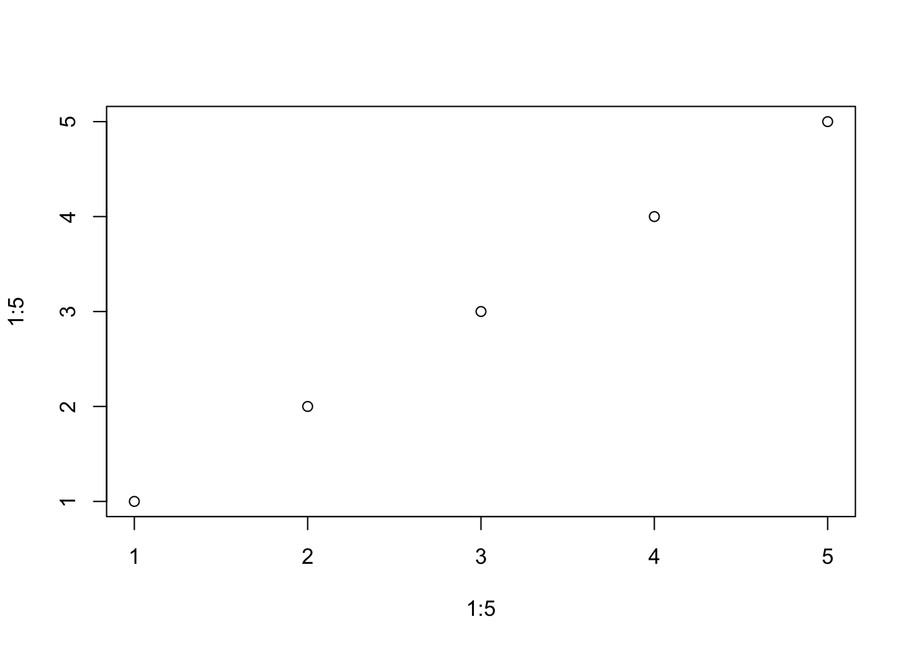
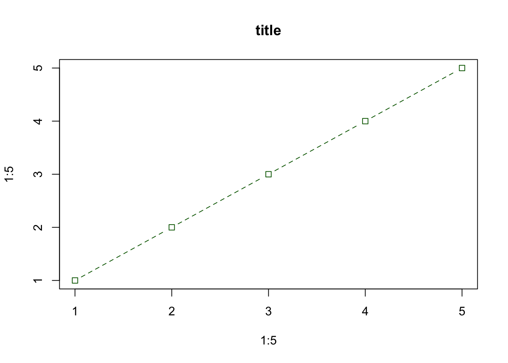
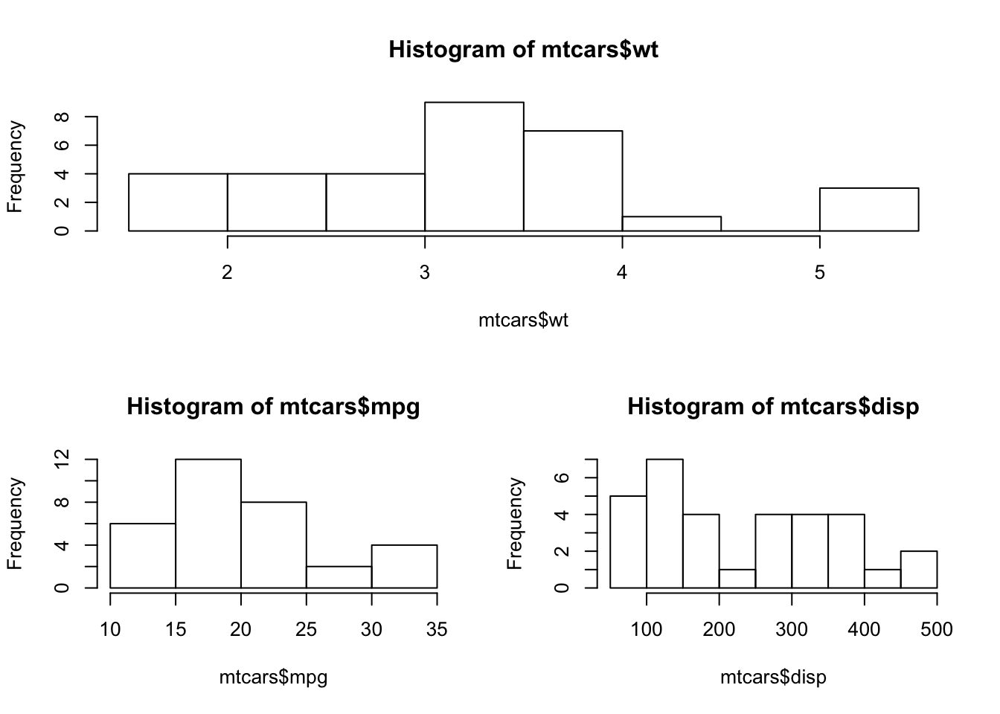
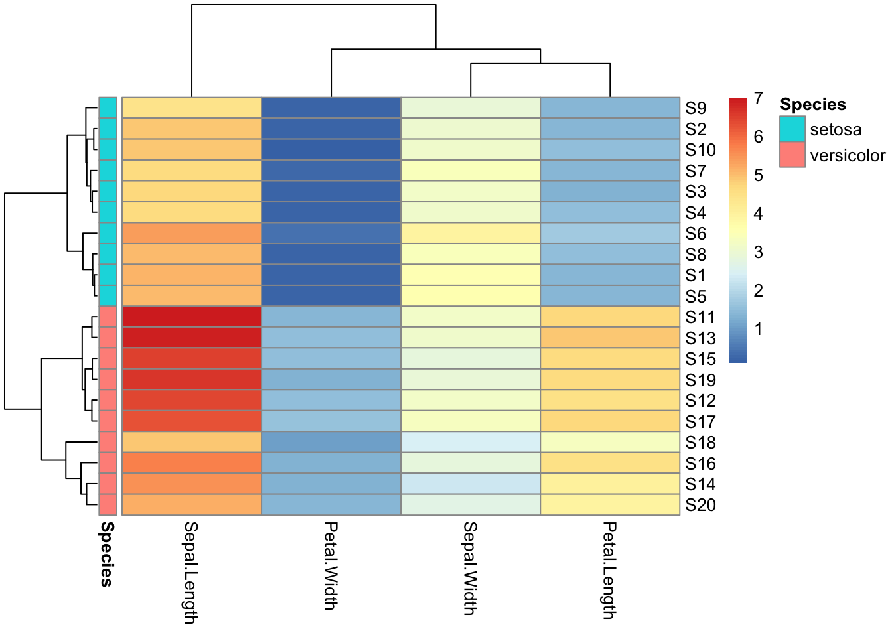
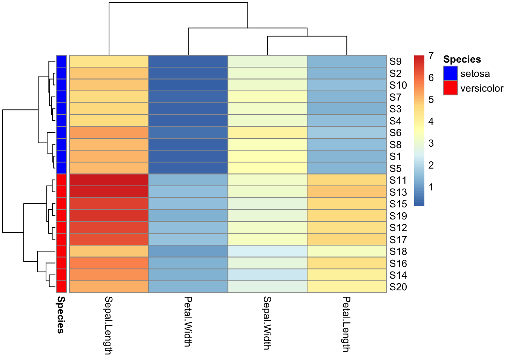
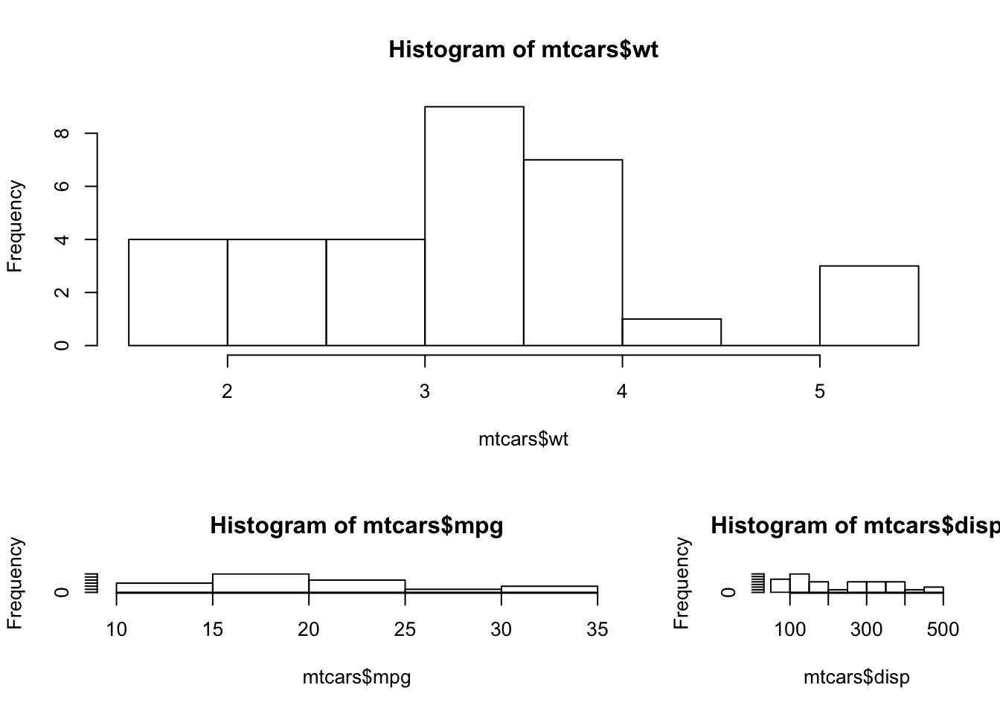
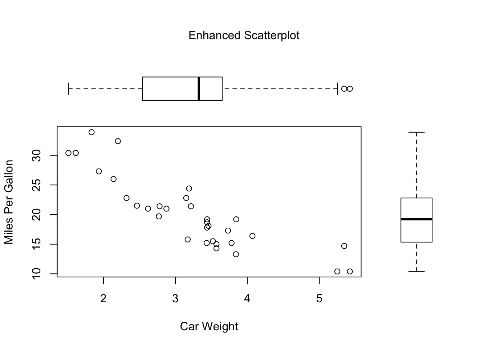
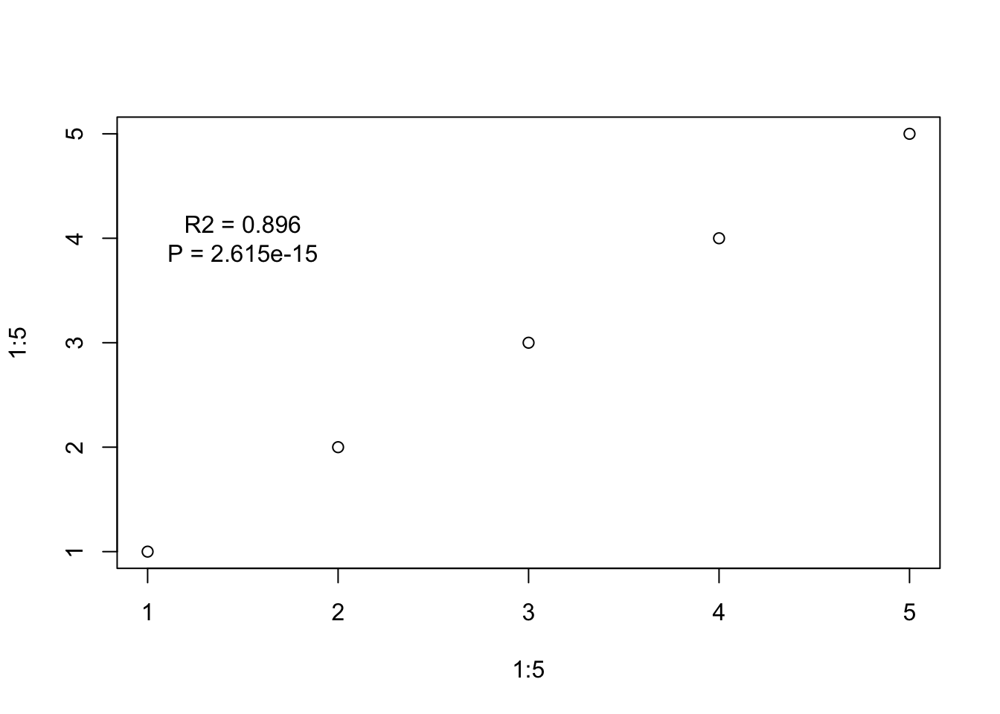

Chapter 9 Plotting in R
Useful references:
- Roger Peng’s guide (much of the notes at the beginning are copied from here)
- Idiot’s Guide
The core plotting and graphics engine in R is encapsulated in the following packages:
- graphics: contains plotting functions for the ‘base’ graphing systems, including
plot,hist,boxplotand many others. - grDevices: contains all the code implementing the various graphics devices, including X11, PDF, PostScript, PNG, etc.
There are three main graphics systems for making a plot:
- base - usually constructed piecemeal, with each aspect of the plot handled separately through a series of function calls. Conceptually simpler.
- lattice - usually constructed in a single function call, so all of the graphics parameters have to be specified at once. This allows R to automatically calculate the necessary spacings and font sizes.
- ggplot2 - combines concepts from both base and lattice but uses an independent implementation.
These generally cannot be mixed. This chapter will discuss base R plotting. ggplot2 will be discussed in the next chapter.
9.1 Base R plotting
There are two ‘phases’ to making a plot:
- Initialising a new plot (e.g. with
plot()orhist(), which will launch a graphics device and draw a plot on the device.) - Annotating (adding to) an existing plot
Example of basic plot:
plot(1:5,1:5)
The default method for plot() is creates a scatter plot and will be used unless the R object input is of some special class.
Base plotting functions (e.g. plot() and boxplot()) share a set of parameters. Here are some useful ones:
pch: the plotting symbol (default is open circle). The different symbols and their corresponding number are shown here:

You can also set pch to a letter, and that letter will be shown at each point.
lty: the line type (default is solid line), can be dashed, dotted, etc.lwd: the line width, specified as an integer multiple.col: the plotting color, specified as a number, string, or hex code; the colors() function gives you a vector of colors by name.xlab: character string for the x-axis label.ylab: character string for the y-axis label.main: title of the plot.type: what type of plot should be drawn e.g.'p'for points,'b'for both.cex: size of points.
Scatter plot with appearance changes.
plot(1:5,1:5, type = 'b', pch = 0, lty = 2, main = "title",
col = "darkgreen")
You can also colour the points according to a factor vector of the same length as the number of data points, by setting col to be this vector. Default colours will be used.
plot(iris$Sepal.Length, iris$Petal.Length, col = iris$Species,
pch = 15)
You can also provide col with a character vector of colour names the same length as the number of data points.
The col argument actually sets the colour of the border of each point. bg sets the colour of the ‘backgroud’ of each point. This can only be set for point shapes that are ‘empty’ in the middle.
plot(iris$Sepal.Length, iris$Petal.Length, col = iris$Species,
pch = 21)
plot(iris$Sepal.Length, iris$Petal.Length, col = iris$Species,
pch = 21, bg = "blue")
9.2 par
The par() function specifies global parameters that affect all plots in an R session. Of course these parameters
las: the orientation of the axis labels on the plot.bg: the background color.mar: the margin size.oma: the outer margin size (default is 0 for all sides).mfrow: layout of plots using syntaxmfrow=c(nrows, ncols), plots are filled row-wise.mfcol: layout of plots using syntaxmfcol=c(nrows, ncols), plots are filled column-wise.
9.3 Combining plots
This can be done using the arguments mfrow or mfcol in par().
par(mfrow = c(2,1))
plot(1:5,1:5)
plot(1:5,1:5)
The layout() function gives you more flexibility. This function takes a matrix, which specifies the location of the figures to plot
layout(matrix(c(1,1,2,3), 2, 2, byrow = TRUE))
hist(mtcars$wt)
hist(mtcars$mpg)
hist(mtcars$disp)
The matrix above looks like this:
matrix(c(1,1,2,3), 2, 2, byrow = TRUE)## [,1] [,2]
## [1,] 1 1
## [2,] 2 3It essentially splits the plotting ‘window’ into 4 quadrants, and specified that the first plot should take the first row consisiting of 2 quandrants and plots 2 and 3 take the second row of quandrants.
You can also add widths and heights arguments to layout() to specify the size of each quandrant (the number of sections would of course depend on each matrix, but there are four in our case).
layout(matrix(c(1,1,2,3), 2, 2, byrow = TRUE),
widths=c(2,1), heights=c(2,1))
hist(mtcars$wt)
hist(mtcars$mpg)
hist(mtcars$disp)
You can also manipulate plot arrangement using fig in par():
par(fig=c(0,0.8,0,0.8))
plot(mtcars$wt, mtcars$mpg, xlab="Car Weight",
ylab="Miles Per Gallon")
par(fig=c(0,0.8,0.45,1), new=TRUE)
boxplot(mtcars$wt, horizontal=TRUE, axes=FALSE)
par(fig=c(0.65,1,0,0.8),new=TRUE)
boxplot(mtcars$mpg, axes=FALSE)
mtext("Enhanced Scatterplot", side=3, outer=TRUE, line=-3) 
First think of the full graph as going from (0,0) on the lower left corner to (1,1) on the top right hand corner.
The first fig=c(0,0.8,0,0.8) specifies the size of the scatter plot. The syntax of the four numbers is c(x1,x2,y1,y2). On the horizontal axis, the plot goes from 0 to 0.8. On the vertical axies, the plot goes from 0 to 0.8.
The top boxplot goes from 0 to 0.8 on the horizontal axis. On the vertical axis, the top boxplot goes from 0.45 to 1. These figures usually require some trial and error to find the ones needed for the desired appearance. Note that this boxplot was located differently when run in the console vs when using knitr.
Setting new=TRUE tells R to make the next plot without cleaning the graphics device.
Reference: Quick-R
9.4 Text
The text() function allows you to add text to your plot.
plot(1:5,1:5)
text(x = 1.5, y = 4, labels = "R2 = 0.896\nP = 2.615e-15")
The x and y arguments specify where on the axis (as determined by the y and x axis of the graph) the text should be. Including "\n" in the text will insert a new line.
9.5 Lines
The function abline() lets you add a new line
9.6 Legend
9.8 Palette
Colour blind friendly palette - 15 hues:
pal <- c("#000000","#004949","#009292","#ff6db6","#ffb6db",
"#490092","#006ddb","#b66dff","#6db6ff","#b6dbff",
"#920000","#924900","#db6d00","#24ff24","#ffff6d")Use: 1,6,11, 2,7,12
20 distinct colours (Link):
pal2 <- c("#000000", "#800000", "#4363d8", "#f58231", "#808000", "#469990","#000075", "#9A6324", "#911eb4", "#3cb44b", "#e6194B", "#f032e6", "#42d4f4", "#bfef45", "#ffe119", "#a9a9a9", "#e6beff", "#fabebe", "#aaffc3", "#ffd8b1")